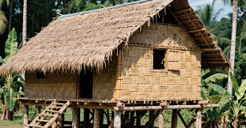
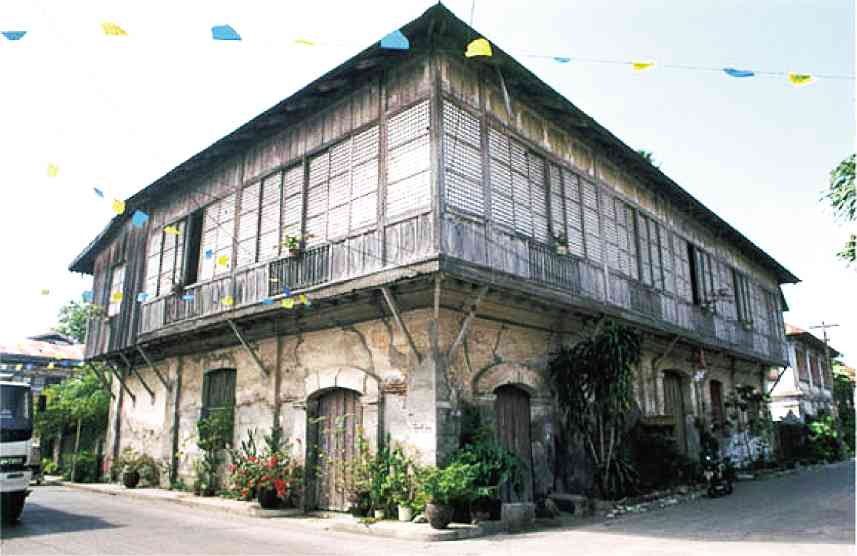
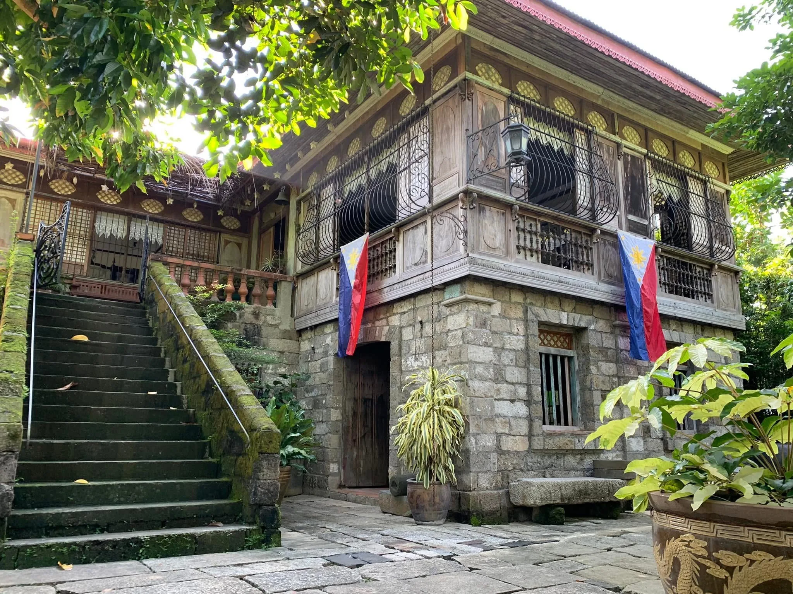

The Bahay Kubo (Nipa Hut) is the quintessential Filipino legacy of organic architecture. It reflects a lifestyle of simplicity and a deep connection with nature, designed to breathe in the tropical heat. Its elevated structure, thatched roof, and open design embody the Filipino spirit of resilience and harmony with the environment.

A Spanish-era stone house combining Filipino and European designs, common in historic towns like Vigan. The Bahay Bato represents the fusion of cultures and the evolution of Filipino architecture during colonial times.

Well-preserved family homes that showcase Filipino heritage, craftsmanship, and generational history. These ancestral homes are living museums that tell stories of the past and the enduring legacy of Filipino families.